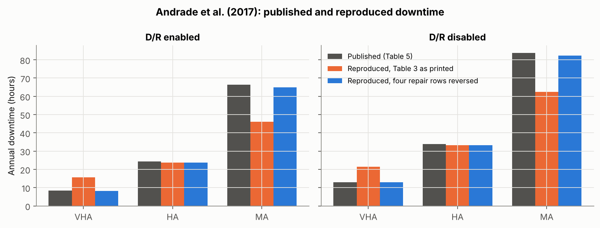
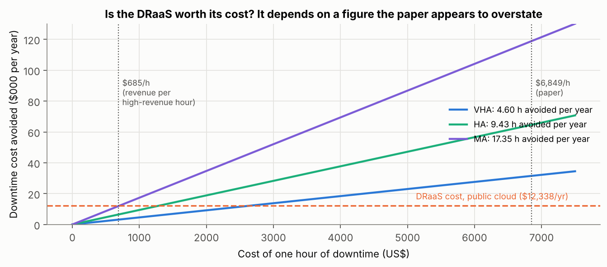
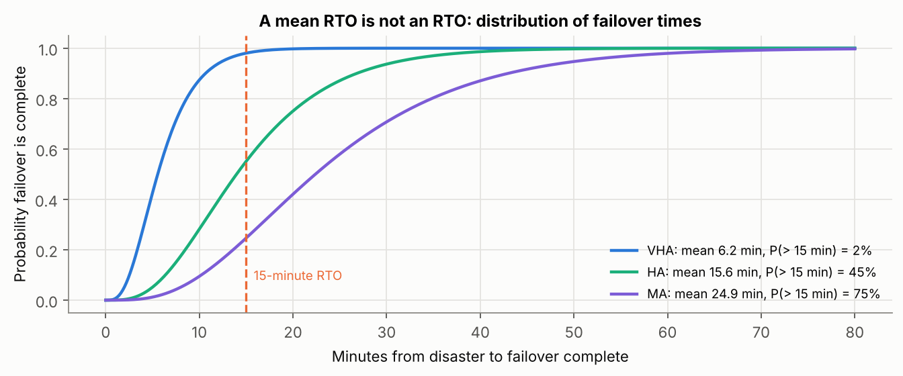
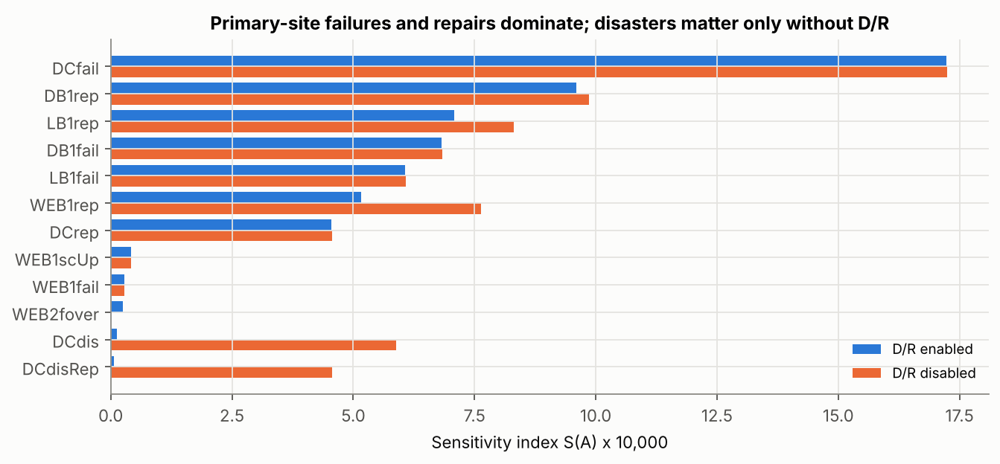
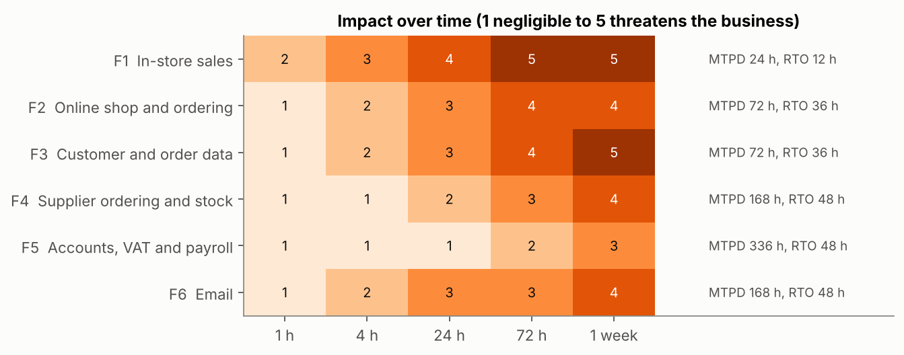
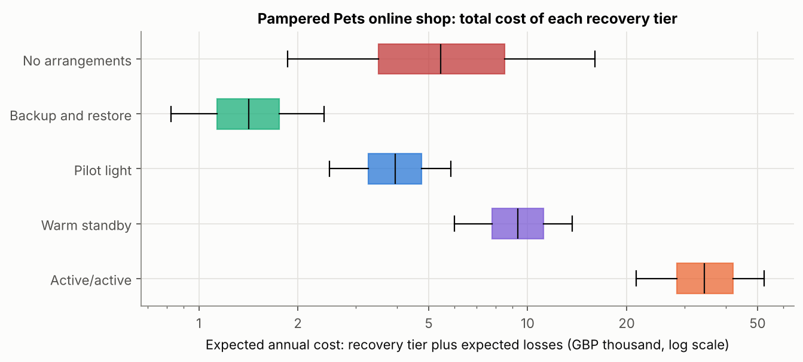
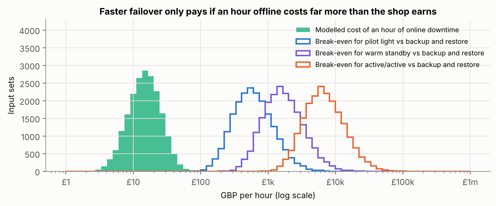

Unit 9: Risk, Business Continuity and Disaster Recovery

This unit covers business continuity (BC) and disaster recovery (DR) plans, the business impact analysis (BIA) that should drive them, recovery time and recovery point objectives (RTOs and RPOs), and the trends shaping information risk management. The artefacts below are a notebook that reproduces Andrade et al.’s (2017) availability model of a Disaster-Recovery-as-a-Service solution and a BIA for Pampered Pets that tests the recovery objectives in my executive summary.
Reflection
Structured using the What? So what? Now what? model (Rolfe, Freshwater and Jasper, 2001).
What?
Unit 9 moved from estimating risk to living with it when it happens. The lecturecast defined BC, DR, RTO and RPO, matched recovery solutions to recovery objectives and looked at where information risk management is heading. The required reading was Andrade et al.’s (2017) availability model of a Disaster-Recovery-as-a-Service (DRaaS) solution. From the recommended book by Popov, Lyon and Hollcroft (2022) I read Hollcroft and Lyon’s (2022) chapter on business continuity plans and Lyon’s (2022) chapter on assessing operational risks at an organisational level. There was no seminar this week, so I followed the pattern of Unit 8. I rebuilt Andrade et al.’s model in Python to see whether its results could be reproduced. I then carried out the BIA that my executive summary should have started from and used it to test the recovery objectives the summary set (Stevens, 2026). The two notebooks are the artefacts below.
So what?
Andrade et al. (2017) model a primary site with a load balancer, five web servers and a database, backed by a cloud copy that takes over when a disaster strikes. They solve it for three parameter settings, with and without DR. Unlike Aijaz and Nazir’s (2024) model in Unit 8, this one held up. With the parameter table as printed, the ‘very high availability’ setting came out worse than published and the ‘medium’ setting better, by up to 21 hours of downtime a year. Then I noticed that the repair times of the data centre, the load balancers and the cloud server got slower as the settings became more available, which contradicts the authors’ own description. With those four rows read the other way round, all six availabilities reproduced to within about 2%, and the top nine parameters of the sensitivity ranking came out in the published order. The arithmetic around the model was another matter. The text says DR cuts downtime by ‘more than 72%’, but that figure is the ratio of downtime with DR to downtime without it; the reduction is 28%. The lost transactions are 1,000 times too small. Most importantly, the hourly cost of downtime, $6,849 for a firm with $1 million of annual revenue and four high-revenue hours a day, is ten times the $684.93 that those assumptions give. At $6,849 an hour DRaaS pays for itself in every setting. At $684.93 it pays for itself in none. In Unit 8 I learned to reproduce a number before relying on it. This time the model was sound, and the input that decided the investment was the one nobody had checked.
Two more points from the paper changed how I think about recovery objectives. The published RTOs (6.36, 16.26 and 27.65 minutes) are close to the average time the cloud takes to take over, and the paper compares them with a 15-minute limit. An RTO is a limit, though, and an average says little about it. Under the ‘high’ setting, whose average misses 15 minutes, more than half of failovers would still finish in time. Second, the RPO is zero only because the authors assume perfect synchronisation and a backup that ‘always works properly’. Replication copies corruption and deletion just as faithfully as good data. AWS (2021) itself warns that continuous replication ‘may not protect against’ corruption or malicious deletion as well as point-in-time backups. The paper’s most useful finding was its sensitivity analysis: once DR is in place, availability depends almost entirely on everyday failures and repairs at the primary site. When I switched DR off, disasters moved up the ranking but still cost less availability than routine faults. DR covers the rare event, and most downtime comes from somewhere else.
The Popov et al. (2022) chapters came at continuity from the other direction. The authors write from operational safety and insurance, and Hollcroft and Lyon (2022) start with emergency action plans for getting people out of a building, then crisis management and communication. Disaster recovery planning is described as ‘highly specialized and generally outside of the scope’ of the chapter. That was a useful corrective. For Pampered Pets, the most important continuity measure for in-store sales is a paper sales log and a card terminal that works on its own mobile data connection, not a data centre. Their advice to anchor consequence levels by asking the people who hold the money what loss they could pay without approval, and what loss would end the business, would give a four-person firm a scale it could actually use. The gaps were just as instructive. Neither chapter mentions an RPO. Lyon (2022) lists ISO 31010’s BIA steps, including a maximum acceptable outage and RTOs ‘for any specialized equipment or technology’, but nothing about how much data a business can afford to lose. For a retailer whose orders and customer records are created all day, that is the more important question. The chapters also rely on risk matrices with three to five levels, which I have been criticising since Unit 4 (Cox, 2008). One detail bothered me. Hollcroft and Lyon open with the claim that about 90% of small businesses fail within two years of a disaster, followed by ‘(Citation, year)’, a placeholder left in the second edition. Andrade et al. open with similar figures, credited to other bodies but cited from a certification magazine. Both readings lean on frightening survival rates without pointing to the original source. I recognised the habit, because my executive summary did something similar with its own requirements.
Applying the BIA to Pampered Pets was uncomfortable. My executive summary required 24/7/365 availability with an RTO and an RPO of under one minute and recommended an active-active, multi-region cloud architecture, citing AWS and Microsoft guidance (Stevens, 2026). It never asked what an hour of downtime would cost. The BIA in Artefact 2 gives maximum tolerable outages of a day or longer, and a week or more for half the functions. On generous assumptions, an hour of online downtime costs a median of about £15. Active-active would only pay for itself at a median of about £6,600 an hour, and it was never the cheapest option, even when I multiplied every hour of downtime by 500 to allow for reputational damage with the brief’s high-profile customers. Backup and restore, with point-in-time copies of the order data and one copy kept offline, was cheapest in 99% of the input sets. Data disasters such as ransomware, deletion or corruption, which active-active does nothing to prevent, accounted for about 80% of the loss that remained. I had chosen the architecture first and then found sources to support it, which is reasoning backwards from the solution. The sub-minute objectives may have been part of the brief, but a BIA would have shown that they needed challenging rather than meeting.
The unit’s emerging trends made this sharper. The outages that shaped resilience thinking in the last two years were failures of providers that many organisations share. A faulty CrowdStrike update affected 8.5 million Windows devices in July 2024 (Microsoft, 2024). A DNS fault in DynamoDB disrupted AWS’s Northern Virginia region for about 15 hours on 19 and 20 October 2025 (AWS, 2025). A second region would have helped with the second outage but not the first, because the faulty software was installed everywhere at once. Lyon’s (2022) lists of risks, from a 2015 survey and from RIMS, treat IT outages, supply chain disruption and contractors as separate items. Neither captures the way one supplier’s failure now reaches thousands of customers at the same moment. Ransomware has also turned DR into a question about backups an attacker cannot reach, which is the NCSC’s (2019) argument for keeping at least one copy offline. Small firms are not keeping up. Only 21% of micro businesses have a formal incident response plan, and the share of small businesses with a business continuity plan covering cyber security fell to 44% from 53% (DSIT and Home Office, 2026). Pampered Pets, with no backups at all, sits squarely in that group.
Now what?
Four changes follow. First, I will not recommend a recovery architecture until a BIA has set the maximum tolerable outage, RTO and RPO for each function. I will also set a separate RPO for data disasters, because replication is not a backup. Second, I will state an RTO as a limit with the probability of meeting it, not as an average, and I will only trust it once a restore has actually been tested. Hollcroft and Lyon (2022) recommend testing at least once a year, and a tabletop exercise is enough for a business this size. Third, I will extend my Unit 8 habit of reproducing a number to the business inputs, because the hourly cost of downtime decided Andrade et al.’s conclusion and my own. Fourth, in my end-of-module e-portfolio I will revise the executive summary’s recommendation. Active-active will be replaced by backup and restore with an offline copy and point-in-time backups for order data, a manual fallback for the shop, and a one-page continuity plan covering one natural, one human-caused and one technological scenario, as Hollcroft and Lyon (2022) suggest. At work, I will ask whether the RTOs in our DR plan are averages or limits and when a restore was last tested.
Artefact 1: Reproducing Andrade et al.’s DRaaS Availability Model
Python notebook: unit9_andrade_draas_reproduction.ipynb. The stochastic Petri net in Section 5 of the paper is translated into the continuous-time Markov chain it generates (3,782 states with DR, 62 without) and solved directly. Inputs are from Table 3; targets are from Table 5, Section 6.2 and Table 6.
1. Availability
Two details of the model’s semantics are left as switches: single- or infinite-server transitions, and whether VMs need their own repair after a data centre outage. Every combination was run with Table 3 as printed and with the repair times of the data centre, both load balancers and the cloud server (6, 4 and 2 hours for VHA, HA and MA) read in reverse order. Only single-server semantics with VM repair after an outage, which is what the paper describes, combined with the reversed repair rows reproduces the published figures.
| Setting | Published, DR on | Table 3 as printed | Repair rows reversed | Published, DR off | Table 3 as printed | Repair rows reversed |
|---|---|---|---|---|---|---|
| VHA | 0.999039 | 0.998209 | 0.999057 | 0.998514 | 0.997543 | 0.998532 |
| HA | 0.997220 | 0.997283 | 0.997283 | 0.996145 | 0.996208 | 0.996208 |
| MA | 0.992429 | 0.994746 | 0.992581 | 0.990449 | 0.992873 | 0.990600 |

2. Derived figures
| Claim in the paper | Recalculated from the paper’s own inputs |
|---|---|
| DR cuts HA downtime by ‘more than 72%’; lost requests fall by 64%, 72% and 79% | These are the ratios of downtime with DR to downtime without it. The reductions are 35%, 28% and 21%. |
| Lost transactions Lq = 8.42 (VHA, DR on), with λ = 1,000 per hour | (1 − A) × 8,760 × 1,000 = 8,418. The published column equals downtime in hours. |
| Downtime costs $6,849 an hour ($1,000,000 revenue, 4 high-revenue hours a day) | $1,000,000 / (365 × 4) = $684.93, one tenth of the published figure; the average hour is worth $114.16. |
| DRaaS at $12,338 to $16,186 a year is ‘an acceptable cost’ | True at $6,849 an hour. At $684.93 the saving is $3,151 (VHA), $6,459 (HA) and $11,884 (MA), below the cost in every setting. |

3. What the RTO measures
| Setting | Published RTO | Failover only (mean) | P(failover > 15 min) | Full model, service restored (mean) | Primary site restored (paper’s Table 2 guard) |
|---|---|---|---|---|---|
| VHA | 6.36 min | 6.2 min | 2% | 9.0 min | 11.7 h |
| HA | 16.26 min | 15.6 min | 45% | 24.8 min | 19.4 h |
| MA | 27.65 min | 24.9 min | 75% | 41.7 min | 27.1 h |

The published RTOs are close to the time the cloud takes to take over: three web servers activated one at a time while the database fails over in parallel. The full-model mean is longer because failover stops if the data centre comes back mid-failover, after which service waits for the primary VMs to be repaired.
4. Sensitivity

The top nine parameters come out in the published order, with indices within about 3% of Table 6 (for example 0.000683 against 0.00068267 for database failure). The one clear difference is the scale-down time, which has no effect in my model because a fourth active web server cannot make the service unavailable.
Artefact 2: Business Impact Analysis and Recovery Objectives for Pampered Pets
Python notebook: unit9_pampered_pets_bia_recovery.ipynb. Follows the BIA steps in Lyon (2022) and NIST SP 800-34 Rev. 1 (Swanson et al., 2010), and the recovery tiers in AWS (2021). Every figure is an assumption made for this exercise; the case study gives no turnover, order volumes or IT costs.
1. Business impact analysis
The six functions come from the brief as summarised in our team report and from the digitalised design in my executive summary (Group 2, 2025; Stevens, 2026). Each is scored for impact at five points after disruption starts (1 negligible, 5 threatens the business). The maximum tolerable period of disruption (MTPD) is the first point where impact reaches 4. The RTO is at most half the MTPD, leaving time to detect the problem and decide to invoke the plan.

| Function | MTPD | RTO | RPO | Recovery strategy |
|---|---|---|---|---|
| In-store sales | 24 h | 12 h (workaround within the hour) | Previous day | Paper sales log; card terminal on its own mobile data; spare PC |
| Online shop and ordering | 72 h | 36 h | n/a | Hosted platform; configuration backed up; holding page and phone orders |
| Customer and order data | 72 h | 36 h | 15 min | Point-in-time backups and a daily copy kept offline (NCSC, 2019) |
| Supplier ordering and stock | 1 week | 48 h | 24 h | Daily backup; phone orders from last stock count |
| Accounts, VAT and payroll | Over 1 week | 48 h | 24 h | Daily backup with an offline copy; move to cloud accounting |
| 1 week | 48 h | Provider retention | Hosted service; supplier phone list kept on paper |
2. Comparing recovery tiers for the online shop
Infrastructure disasters (loss of a hosting region or platform) and data disasters (ransomware, deletion, corruption) are modelled separately, because replication helps with the first and not the second. 20,000 input sets are drawn from triangular ranges, and all tiers share the same random numbers (Eckstein and Riedmueller, 2002). Lost sales are costed at full value, not margin, which favours spending on recovery.
| Tier | RTO (min, likely, max) | Annual cost, GBP (min, likely, max) | Expected total annual cost (median) | Expected downtime (median) | Cheapest in |
|---|---|---|---|---|---|
| No arrangements | 24, 72, 240 h | 0 | £5,447 | 56 h | 1% |
| Backup and restore | 4, 12, 24 h | 300, 700, 1,500 | £1,415 | 6 h | 99% |
| Pilot light | 0.5, 1, 3 h | 1,500, 3,000, 6,000 | £3,956 | 2 h | 0% |
| Warm standby | 6, 15, 30 min | 4,000, 8,000, 15,000 | £9,324 | 1 h | 0% |
| Active/active | Under 1 min | 15,000, 30,000, 60,000 | £34,436 | 1 h | 0% |

Data disasters account for 81% of the expected loss that remains under backup and restore, and no tier with faster failover reduces it.
3. What would justify sub-minute objectives?

| Each hour of downtime costs | Backup and restore cheapest | Pilot light cheapest | Warm standby cheapest | Active/active cheapest |
|---|---|---|---|---|
| Modelled figure (median £15) | 99% | 0% | 0% | 0% |
| 10 times | 95% | 5% | 0% | 0% |
| 100 times | 16% | 84% | 0.4% | 0% |
| 500 times | 0.4% | 72% | 28% | 0% |
Active/active would break even with backup and restore only if an hour offline cost a median of about £6,600, which is 461 times the modelled figure. The executive summary’s RTO and RPO of under one minute were requirements without a business case.
References
Aijaz, M. and Nazir, M. (2024) ‘Modelling and analysis of social engineering threats using the attack tree and the Markov model’, International Journal of Information Technology, 16(2), pp. 1231–1238. Available at: https://doi.org/10.1007/s41870-023-01540-z (Accessed: 3 October 2026).
Andrade, E., Nogueira, B., Matos, R., Callou, G. and Maciel, P. (2017) ‘Availability modeling and analysis of a disaster-recovery-as-a-service solution’, Computing, 99(10), pp. 929–954. Available at: https://doi.org/10.1007/s00607-017-0539-8 (Accessed: 3 October 2026).
AWS (2021) Disaster recovery of workloads on AWS: recovery in the cloud. AWS whitepaper, 12 February. Seattle, WA: Amazon Web Services. Available at: https://docs.aws.amazon.com/whitepapers/latest/disaster-recovery-workloads-on-aws/disaster-recovery-options-in-the-cloud.html (Accessed: 3 October 2026).
AWS (2025) Summary of the Amazon DynamoDB service disruption in the Northern Virginia (US-EAST-1) Region. Seattle, WA: Amazon Web Services. Available at: https://aws.amazon.com/message/101925/ (Accessed: 3 October 2026).
Cox, L.A. (2008) ‘What’s wrong with risk matrices?’, Risk Analysis, 28(2), pp. 497–512. Available at: https://doi.org/10.1111/j.1539-6924.2008.01030.x (Accessed: 3 October 2026).
Department for Science, Innovation and Technology (DSIT) and Home Office (2026) Cyber security breaches survey 2025/2026. Official statistics. Available at: https://www.gov.uk/government/statistics/cyber-security-breaches-survey-20252026/cyber-security-breaches-survey-20252026 (Accessed: 3 October 2026).
Eckstein, J. and Riedmueller, S.T. (2002) ‘YASAI: yet another add-in for teaching elementary Monte Carlo simulation in Excel’, INFORMS Transactions on Education, 2(2), pp. 12–26. Available at: https://doi.org/10.1287/ited.2.2.12 (Accessed: 3 October 2026).
Group 2 (2025) A risk assessment report for Pampered Pets based on ISO/IEC 27005:2022 and ISO 31000:2018. Unpublished team report, Security and Risk Management module. University of Essex Online.
Hollcroft, B. and Lyon, B. (2022) ‘Business continuity plan’, in Popov, G., Lyon, B.K. and Hollcroft, B.D. Risk assessment: a practical guide to assessing operational risks. 2nd edn. Hoboken, NJ: John Wiley & Sons, ch. 19. Available at: https://www.oreilly.com/library/view/risk-assessment-2nd/9781119755920/ (Accessed: 3 October 2026).
Lyon, B. (2022) ‘Assessing operational risks at an organizational level’, in Popov, G., Lyon, B.K. and Hollcroft, B.D. Risk assessment: a practical guide to assessing operational risks. 2nd edn. Hoboken, NJ: John Wiley & Sons, ch. 17. Available at: https://www.oreilly.com/library/view/risk-assessment-2nd/9781119755920/ (Accessed: 3 October 2026).
Microsoft (2024) ‘Helping our customers through the CrowdStrike outage’, The Official Microsoft Blog, 20 July. Available at: https://blogs.microsoft.com/blog/2024/07/20/helping-our-customers-through-the-crowdstrike-outage/ (Accessed: 3 October 2026).
National Cyber Security Centre (NCSC) (2019) ‘Offline backups in an online world’, NCSC blog, 13 August. Available at: https://www.ncsc.gov.uk/blog-post/offline-backups-in-an-online-world (Accessed: 3 October 2026).
Popov, G., Lyon, B.K. and Hollcroft, B.D. (2022) Risk assessment: a practical guide to assessing operational risks. 2nd edn. Hoboken, NJ: John Wiley & Sons. Available at: https://www.oreilly.com/library/view/risk-assessment-2nd/9781119755920/ (Accessed: 3 October 2026).
Rolfe, G., Freshwater, D. and Jasper, M. (2001) Critical reflection in nursing and the helping professions: a user’s guide. Basingstoke: Palgrave Macmillan.
Stevens, I. (2026) Quantitative risk assessment and digital resilience strategy for Pampered Pets: executive summary. Unpublished assignment, Security and Risk Management module. University of Essex Online.
Swanson, M., Bowen, P., Phillips, A.W., Gallup, D. and Lynes, D. (2010) Contingency planning guide for federal information systems. NIST Special Publication 800-34 Rev. 1. Gaithersburg, MD: National Institute of Standards and Technology. Available at: https://csrc.nist.gov/pubs/sp/800/34/r1/upd1/final (Accessed: 3 October 2026).